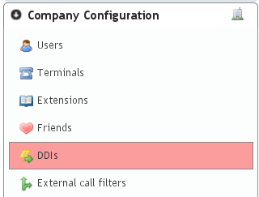
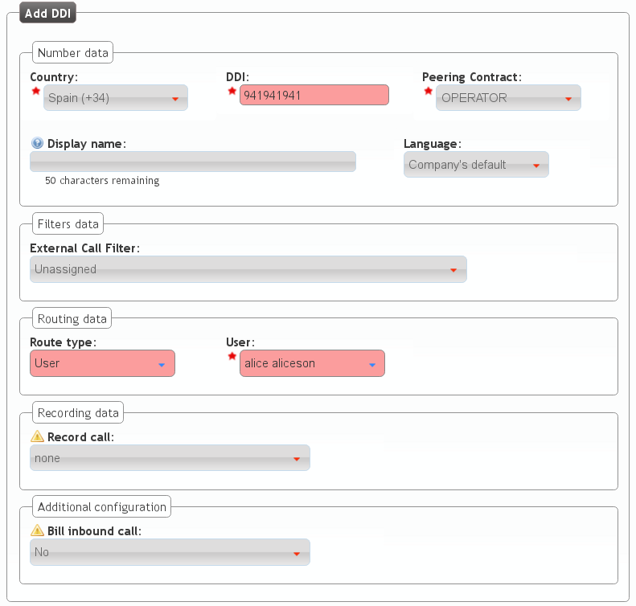

Once we have an agreement with a VoIP provider and we have configured it in the peering section, only two task are pending:
Configuring an external DDI¶
The brand operator, responsible of this peering agreements with VoIP providers , has the task to create the DDIs for each provider.
To accomplish this, following section can be used:
Notice that in order to access this section, the brand operator (or god) must have emulated the proper company and access the menu section Company Configuration.
Attention
Section Company configuration > DDIs is different when the company administrator access than the displayed data when a global or brand administrator does. Company administrator are unable to create or delete DDIs, just edit the one created by the brand or god administrator.
The section Brand configuration > DDIs is a read-only display of all the DDIs of the brand, associated with the different companies.

Taking into account this concepts, we create a new DDI and fill the required fields:
- Country
- The country of the new created DDI. Used for E164 standarization.
- DDI
- The number, without country code.
- Peering contract
- The peering contract that provides this number. This relation allow the platform to apply the required Numeric transformations in order to determine its standard form.
- External Call Filter
- Allows configuration based on Calendars and Schedulers as shown in External Call filters. Leave empty if you don’t need to apply any kind of filter.
- Route
- A DDI can have different treatments. For our current goul, set route to user and select Alice.
- Record calls
- Can be used to record external calls (see Call recording).
- Tarificate incoming calls
- This setting requires the external tarification module and allows tarification on special numbers. This module is not standard so don’t hesitate in contact us if you are interested.
Configure incoming routes¶
In the previous section, we have created the DDI and configure it, but the most common procedure is that the brand operator just create it while the company administator, using the same saction will configure it choosing the correct route (user, huntgroup, etc.), its filters with calendars and so on.
Note
At this point, calling the number of the configured DDI will make the Alice phone ring.